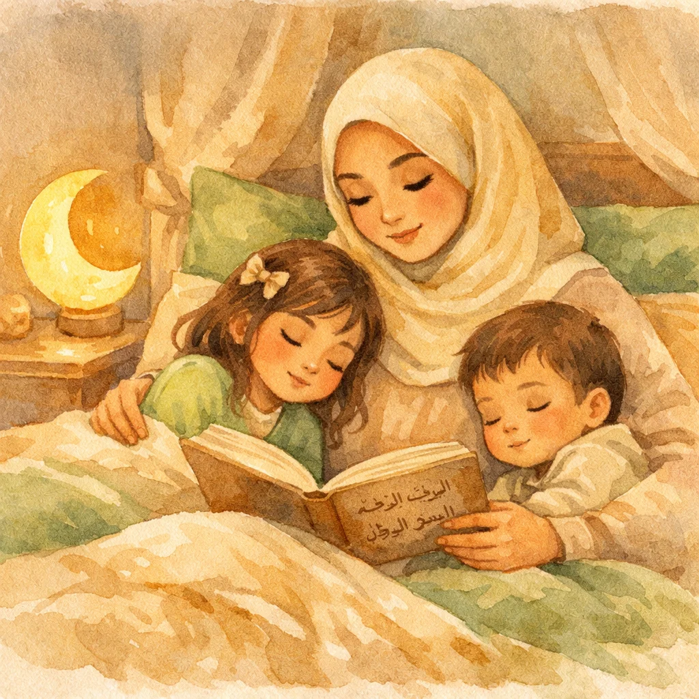

Islamic Bedtime Stories for Kids: Calm, Beautiful Tales to End the Day
There's something sacred about bedtime. The house goes quiet. The world slows down. And in that soft space between wakefulness and sleep, a story can plant seeds of faith that last a lifetime. Islamic bedtime stories for kids aren't just about filling the minutes before lights-out — they're how our children fall asleep wrapped in the remembrance of Allah.

🌙 Want beautiful bedtime stories with audio your kids will love?
Try Islamic Stories for Kids →My daughter was three the first time she asked for a "prophet story" at bedtime. Not a fairy tale. Not a cartoon character. A prophet story. She'd heard the story of Prophet Nuh's ark once, and it stuck. Every night after that, she'd climb into bed, pull the covers up to her chin, and say, "Tell me about the boat again, Mama."
That's the power of Islamic bedtime stories for kids. They become part of the rhythm of childhood. Part of how your child understands the world before they drift off to sleep. And unlike screen time or random YouTube videos, these stories leave something beautiful behind — a sense of peace, of being loved by Allah, of belonging to something bigger.
Whether you have a toddler who can barely sit still or a seven-year-old who asks deep questions, this guide will help you build a bedtime storytelling habit that strengthens your child's faith and makes bedtime the best part of their day. (Already familiar with Quran stories for bedtime? This goes deeper into the routine and habit-building side.)
Why Bedtime Is the Perfect Time for Islamic Stories
There's actual science behind why bedtime stories work so well. When children are winding down for sleep, their minds are in a relaxed, receptive state. The prefrontal cortex — the part of the brain responsible for critical thinking and resistance — quiets down. What's left is pure absorption. Whatever you share in those last few minutes before sleep gets encoded more deeply into memory.
The Prophet Muhammad (ﷺ) himself had a bedtime routine. He would recite Surah Al-Ikhlas, Al-Falaq, and An-Nas, blow into his hands, and wipe them over his body. He would say "Bismika Allahumma amutu wa ahya" before sleeping. This wasn't random — it was intentional. The last moments before sleep were dedicated to Allah.
When we tell our children Islamic stories at bedtime, we're following that same spirit. We're making Allah the last thought on their minds. And those thoughts shape dreams, shape hearts, shape the kind of Muslim your child is becoming.
The Best Islamic Bedtime Stories for Kids (By Age)
Islamic Stories for Toddlers (Ages 1-3)
Islamic stories for toddlers need to be short, warm, and sensory. At this age, your child doesn't need a complex plot. They need your voice, your closeness, and simple ideas they can hold onto. Here's what works:
🌙 "Allah Made the Moon for You"
Point to the window (or just imagine it). Tell your toddler: "See the moon? Allah put it there. He put it there so you'd know it's nighttime. He put the stars there too, like tiny night lights. Allah takes care of everything — even your bedtime." This isn't a traditional story, but for toddlers, it's perfect. It connects Allah to something they can see every single night.
🌟 Bedtime Tip
Say this one while looking out the window together. The visual anchoring makes it stick. Your toddler will start pointing at the moon and saying "Allah" on their own.
🐑 Prophet Ibrahim's Baby Sheep
Tell a simplified version: "Once there was a man named Ibrahim. He loved Allah very much. Allah gave him sheep and camels and a beautiful family. Ibrahim always said 'Thank you, Allah' before he went to sleep. Just like you can say thank you to Allah right now." Keep it under two minutes. Use a soft, rhythmic voice. Toddlers respond to melody more than meaning at this age.
🌟 Bedtime Tip
Pair this with a stuffed animal. "Your teddy is going to sleep too. Let's say Alhamdulillah together." Toddlers love rituals with objects.
🕊️ The Prophet Who Loved Animals
Tell them: "Prophet Muhammad (ﷺ) loved animals. He gave water to thirsty cats. He told people to be gentle with birds. He said that being kind to animals makes Allah happy. So when you're kind to your cat (or your fish, or the birds outside), Allah smiles." This story works beautifully for toddlers because they're naturally drawn to animals. It connects their existing love to Islamic values effortlessly.
🌟 Bedtime Tip
If you have a pet, bring it into the room for storytime. "Let's say goodnight to our cat. The Prophet would have liked that."
For Preschoolers (Ages 3-5)
At this age, kids can follow a simple narrative arc. They love stories with animals, adventures, and clear heroes. Keep stories between 5-8 minutes.
🚢 Prophet Nuh and the Great Ark
This is the ultimate bedtime story for preschoolers. Animals, a big boat, rain, and a happy ending. Tell it slowly: "Prophet Nuh asked his people to be good, but they wouldn't listen. So Allah told him to build a big, big boat. He brought two of every animal — two lions, two birds, two rabbits, two cats... (let your child name animals). Then the rain came. But everyone on the boat was safe. Allah protected them." End with: "Just like Allah protects you when you're sleeping."
🌟 Bedtime Tip
Let your child "board the ark" by naming animals they want to bring. This interactive element keeps them engaged without winding them up.
🌿 The People of the Cave (Ashab al-Kahf)
A group of young people who loved Allah went to sleep in a cave — and Allah protected them for hundreds of years. Tell the simplified version: "There were some young people who believed in Allah when others didn't. They went to a cave to be safe. Allah made them fall into a deep, peaceful sleep. He kept them safe the whole time. When they woke up, everything was different — but Allah had taken care of them." This story is perfect for bedtime because it's literally about falling asleep under Allah's protection.
🌟 Bedtime Tip
"Just like Allah kept the people of the cave safe while they slept, He keeps you safe too." This is incredibly reassuring for kids who are afraid of the dark.
🐜 Prophet Sulaiman and the Talking Ant
Tell them how Prophet Sulaiman could talk to animals. One day, he heard a tiny ant telling the other ants: "Quick! Go home before Sulaiman's army steps on you!" Sulaiman heard the little ant and smiled. He thanked Allah for letting him understand even the smallest creatures. He made sure his army walked carefully so no ant would be hurt.
🌟 Bedtime Tip
Whisper this story. The quieter you tell it, the more captivating it becomes — and the sleepier your child gets.
For Older Kids (Ages 6-10)
Older children want more depth. They can handle longer narratives, moral complexity, and stories that make them think. Aim for 10-15 minutes.
⭐ Prophet Yusuf's Journey
This is one of the most beautiful stories in the entire Quran — Allah Himself calls it "the best of stories" (Ahsan al-Qasas). Tell it in installments across multiple nights: Night 1: Young Yusuf's dream of eleven stars bowing to him. Night 2: His brothers' jealousy and the well. Night 3: Life in Egypt, his honesty and patience. Night 4: Becoming a leader and forgiving his brothers. Each night ends on a gentle cliffhanger. Your child will ask for bedtime.
🌟 Bedtime Tip
The serial format is incredibly powerful. Kids who resist bedtime will suddenly rush to get under the covers because they want the next chapter.
🏔️ Prophet Ibrahim and the Stars
Young Ibrahim looked at the night sky and saw a bright star. "This must be my Lord," he thought. But then the star set. He saw the moon — bigger, more beautiful. "This must be my Lord!" But the moon set too. Then the sun rose, brilliant and powerful. But even the sun set. Ibrahim realized: none of these could be God. The One who created all of them — that is Allah. This story is perfect for older kids lying in bed, looking at the ceiling, wondering about big things.
🌟 Bedtime Tip
If possible, tell this story on a clear night. Let your child look at the stars through the window while you narrate. The experience becomes unforgettable.
When children fall asleep with Islamic stories, their dreams are filled with faith
How to Build an Islamic Bedtime Storytelling Routine
Telling one Islamic story at bedtime is nice. Making it a habit is transformational. Here's a step-by-step routine that works for families with kids of all ages:
The 20-Minute Islamic Bedtime Routine
Wudu Together (3 minutes)
Make wudu part of the bedtime routine, not just a prayer thing. "We're washing away the day." This signals to the brain and body that it's time to wind down.
Pajamas + Settle In (2 minutes)
Get cozy. Dim the lights. No screens. This is the transition zone.
Islamic Story Time (10 minutes)
Tell one story. Just one. Quality over quantity. Use a calm, gentle voice. Sit close or lie next to them. This is the heart of the routine.
Bedtime Duas (3 minutes)
Say the bedtime duas together. Start with just one: "Bismika Allahumma amutu wa ahya." Add Ayat al-Kursi and the three Quls as your child learns them.
Gratitude Moment (2 minutes)
"What are three things you want to thank Allah for today?" This trains gratitude and gives you a window into your child's inner world. Some nights, their answers will melt your heart.
Tips for Making Islamic Bedtime Stories a Lasting Habit
Starting is easy. The hard part is doing it every single night — especially when you're exhausted, the dishes aren't done, and you just want to collapse on the couch. Here's what actually helps:
1. Same Time, Same Place, Every Night
Habits are built on cues. The cue for bedtime stories should be automatic: pajamas on → lights dim → story time. No negotiation, no "maybe tonight." It just happens. After 2-3 weeks, your child's brain will expect it — and they'll remind you if you forget.
2. Start Ridiculously Small
You don't need to tell a 15-minute epic every night. On tired nights, a 2-minute story is still a win. "Tonight's story is short: Prophet Muhammad (ﷺ) always smiled. He said smiling is charity. So let's smile at each other right now. Goodnight." That counts. Consistency beats perfection every single time.
3. Let Your Child Choose
Give them two or three options: "Do you want to hear about Prophet Musa tonight, or the People of the Cave?" When kids have ownership over the choice, they're more invested. Some kids will ask for the same story for weeks. That's fine — repetition is how young minds learn.
4. Use an App When You're Tapped Out
Some nights, you don't have the energy to narrate. That's okay. Use an app with audio Islamic stories — your child still gets their story, and you can rest next to them while it plays. The routine stays intact even when your voice needs a break. (Shameless plug: our app has beautiful illustrated stories with gentle audio narration designed exactly for this.)
5. Make It a Cliffhanger
For older kids, stop the story right before the resolution. "And then Prophet Yusuf looked up and saw... well, I'll tell you tomorrow night." Your child will actually want to go to bed the next night. Bedtime becomes something they look forward to instead of resist. This is the single most effective trick for reluctant sleepers.
Bedtime Duas Every Child Should Learn
Stories and duas go hand in hand at bedtime. Here are the essential ones, in the order I'd teach them:
1. Before Sleeping
"Bismika Allahumma amutu wa ahya"
In Your name, O Allah, I die and I live. (Bukhari)
2. Ayat al-Kursi (Al-Baqarah 2:255)
The Prophet (ﷺ) said whoever recites Ayat al-Kursi before sleeping will have a guardian angel, and no shaytan will come near them until morning.
3. The Three Quls
Surah Al-Ikhlas, Al-Falaq, and An-Nas. The Prophet (ﷺ) would cup his hands, recite them, and wipe over his body before sleep.
4. SubhanAllah, Alhamdulillah, Allahu Akbar
33 times each (or simplified for young kids: just say each one 3 times together).
Common Bedtime Struggles (and How Stories Help)
Let's be honest — bedtime isn't always peaceful. Here's how Islamic storytelling addresses the most common bedtime battles:
😰 "I'm scared of the dark"
Tell the story of the People of the Cave. Allah kept them safe in complete darkness for hundreds of years. "Allah watches over you in the dark too. He never sleeps. He's always there." Pair it with Ayat al-Kursi. Many parents report this combination works better than night lights.
😤 "I don't want to go to bed"
Use the cliffhanger technique. "I have an incredible story about Prophet Musa tonight... but it only happens in bed." Suddenly bed is where the good stuff is. Also: make bedtime the only time they hear these stories. Exclusivity creates desire.
🏃 "I can't fall asleep"
Slow your voice way down during the story. Speak softer as you go. By the end, you should be almost whispering. This naturally lowers your child's heart rate and breathing. Follow the story with the bedtime duas in the same soft tone. It's a natural sedative — no melatonin required.
A 7-Night Bedtime Story Plan to Get You Started
Not sure where to begin? Here's a ready-made week of Islamic bedtime stories for kids. Just follow the plan:
Prophet Nuh and the Ark — animals, rain, safety. End with: "Allah protects those who trust Him."
The People of the Cave — falling asleep under Allah's protection. End with: "Allah watches over you all night."
Prophet Sulaiman and the Ants — kindness to small creatures. End with: "Even the smallest things matter to Allah."
Prophet Ibrahim and the Stars — searching for Allah. End with: "The stars are still out there. Allah put them there for you."
Prophet Muhammad's Kindness — the neighbor story. End with: "Being kind is the sunnah. Even at school tomorrow."
Prophet Yusuf Part 1 — the dream of eleven stars. End with: "Tomorrow I'll tell you what happened next..."
Prophet Yusuf Part 2 — the well and Egypt. End with: "Allah had a plan for Yusuf. He has one for you too."
After the first week, you'll have the habit. Your child will remind you. The stories will flow more naturally. And that quiet bedtime moment will become the most meaningful part of your day — for both of you.
The Long-Term Impact of Islamic Bedtime Stories
Children who grow up hearing Islamic stories at bedtime carry something invisible but powerful into adulthood. They associate Islam with warmth, safety, and love — not obligation. They know the prophets not as distant historical figures, but as friends whose stories were whispered to them in the dark. (For a deeper dive into specific prophet stories for kids, we've covered 10 of the best.)
They grow up knowing that Allah is not someone to fear in the dark, but the One who protects them in the dark. That's a foundation no amount of weekend Islamic school can replicate. It's built night by night, story by story, in the quietest moments of childhood.
So tonight, try it. Dim the lights. Sit on the edge of the bed. And tell your child a story about someone who loved Allah. It doesn't have to be perfect. It just has to be yours.
Start Tonight 🌙
Our app has beautiful illustrated Islamic stories with gentle audio narration — perfect for bedtime. Free to try.
Download Islamic Stories for Kids →